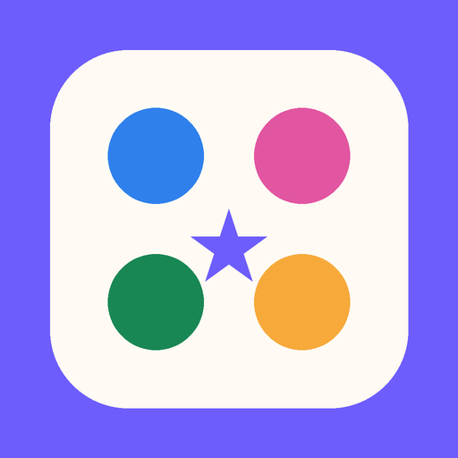

A simple interactive learning game that helps preschool children practice size, quantity, comparison, and compound words using pictures, sound, and short spoken directions.

40 short activities with visual choices, spoken directions, and child-friendly feedback.
Children identify and compare objects by size using familiar visual examples.
Children compare visibly different groups and practice early quantity vocabulary.
Children compare groups of 1–10 objects and identify which has more, less, or the same amount.
Children combine two familiar words and pictures to form compound words such as sunflower, rainbow, and cupcake.
The game can read directions aloud, repeat them on request, and provide immediate feedback. Correct compound-word answers are also spoken aloud.